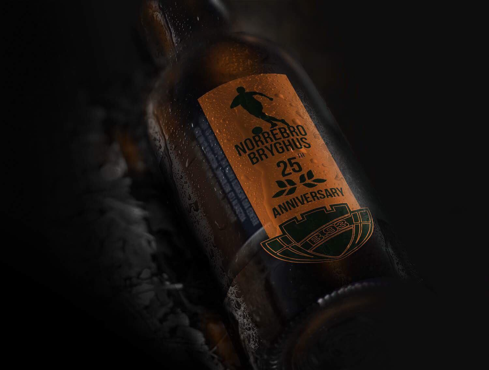

TASK: Design the limited edition label according to my creative ideas an thoughts.
Nørrebro Bryghus was established in September 2003 in Ryesgade, Copenhagen, as a brewery with attached restaurant and bar.
B.93 is one of Denmark's largest, oldest and with nine Danish championships one of the most winning football clubs.
Nørrebro Bryghus as a part of the campaign, supporting the local business, decided to cooperate with B.93 and has been sponsor of the club since the summer of 2016.
In connection with the 125th anniversary / birthday in B.93, Nørrebro Bryghus has made an anniversary limited edition beer available to the club. The anniversary beer can be purchased at Østerbro and for each beer sold, 1 krone per sold beer to the youth department in B.93.
